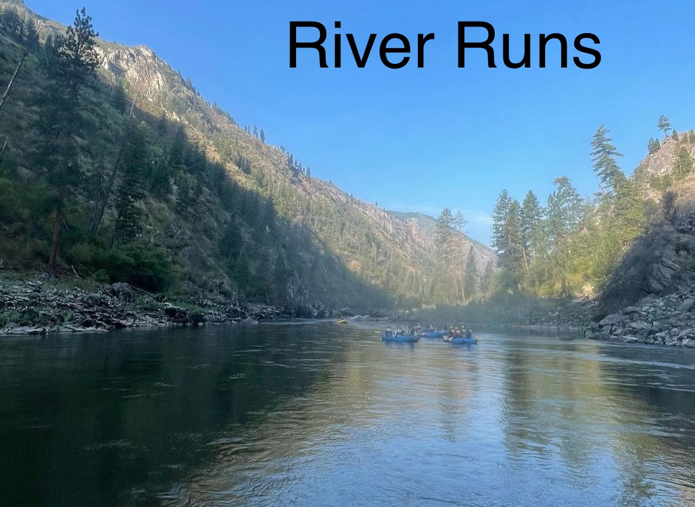

find a place to cool off from the heat using River Runs
Escape the sun, and have fun!
We are here to give you a list of River Rafting spots around Arizona! These spots vary from beginner level, all the way down to experienced rafters who have been on multiple trips.
Families and adventureres looking to have fun!
If you are a family with older kids, or someone who loves water, cool views and fun obstacles, Look no further than River Runs!
River Runs will provide the most family friendly service, we want to help you have a good time and make it an unforgettable experience for all to remember! We will do our best to help you out with any questions comments and concerns that come your way!
Style Guide
Color Palette
Palette URL:
https://coolors.co/396e94-e7c24f-a43312-381d2a-aabd8c| f5dfbb | f25757 | a6e1fa 1 |
|---|---|---|
| #f5dfbb | #f25757 | #a6e1fa |
Typography
Heading Font: "Kanit", sans-serif;
Paragraph Font: "Roboto Mono", monospace;
Normal paragraph example
Believe it or not, some of the best White Water Rafting can be found in Arizona! Come and check out the upper Salt River if you are looking for a cool adventure, and if you are a more experienced river rafter!
Colored paragraph example
There are more places to raft especially for families! Places like the Telluride's San Miguel (ages 8 and up), and Durango, and Pagosa's Upper Piedra River (ages 12 and up). These are family friendly to all who are coming!
Navigation
Site Map
Wireframes
Home